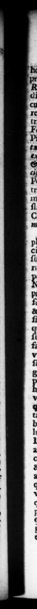

83 Cucum ſtitit, qui imperium populi Ea maximum redcujuſque, manentibus titulis, reſtituit: 1 — triumphali effigie in utraque Fori 7 ticu dedica vit. Profeſſus FTediao, com mentam id ſe, ut illorum velut ad exemplar & ipſe dum viveret, & inſequentium etatum prin755 exigerentur & ci vibus. 0 tra theatri ejus regiam, marmoreo Jano ſuppoſuit, tranatam è curia, in qua C. Cæſar fuerat occilus. 32. Pleraque peſſimi exempli correxit, quæ in perviſuetudine licentiaque bellorum Civiltum duraverant, aut r pacem etiam egititerant. am & graſſatorum plurimi palam ſe ferehant ſuccincti ferro, quaſi tuendi ſui cauſa: & rapti per agros viatores line diſcrimine, liberi, ſervique, ergaſtulis ſlorum upprimebantur: & plurimæ iones, titulo collegii noV1, ad nullius non facinoris ſocietatem coibant. Isitur graſlatores d iſpoſitis per oppng loca ſtationibus, intbuit : ergaſtala recognovit : collegia, præter antiqua & legitima, diſſolvit : tabulas veterum wrarii debitorum, vel præcipuam calumniandi materiam, exuſflit. in urbe publica juris ambigui poſſeſforibus ad juilicavit. Dincurnorum reorum, & ex quorum ſordibus nihil aliud quam voluptas inimicis quæreretur, nomina abolevit: conditione gropoſita, ut fi quem quis repetere vellet, par periculum pœnæ ſubiret. Ne quod autem maleficium negot iumve impunitate vel mora elaberetur, xxx amplius dies, D. OCTAY. A didifſeat, Itaque & opera ell. quoque ſtatuam cn , marble arch, over againſi the fine hoze ciem puhlicam, ant ex conUS T. 73 Gods, he paid the higheſt bonaur to the , 2 of thoſe — 5,thatz from the poor condition the Roman ſtate mas ri. ginally in, had raiſed it ta the higbeſt Pitch of grandeur ; and 1 repair d or rebuilt the publick edifices had raiſed, and preſerved the former inſcriptions, and eretted the ſtatues . them all in a triumphal dreſs, in bot the piazzas of buy forum. And declared 2 proclamation, That his deſigu iu ſo oing was, that the Roman le might require from him, and all ſucceeding princes, a conformity to thoſe noble patterns. - He Likewiſe removed the ſtatue of Pompey from the ſenate-houſe, in which C. Ceſar had been ſlain ;, and placed it under 4 e adjoining to his theatre: 32. He ſuppreſſed 4 great many ill practices, 5 detrimental to the publick, that bad been introduced during the confuſi in of the late civil wars, or had their riſe from the long peace that enſued, Great numbers of bighwaymen appeared ovenly with ſwords on, under colour of . Fr And travellers, Freemen and ſlaves without diſtinction were up and down the country carried off by violence, and kept concealed” in work-houſes, And ſeveral parties of men, under the 2 title nem companys, caballed together for the commiſſſon of all manner of villany. He quelled the Banditti, by guards of ſoldiers poſted in proper places for the purfoſe ? took a ſir: account of the works — 2 and diſſil ved all companys, but ſuch as were of antient flanding and eſtabliſh'd by law. He burn all the notes of ſuch as had been a long time in arrear with the treaſury, as the brincidal fund FA vexatious ſuits and proſecutions. Places in the city that were claimed by the publick, where the property was dubious, he adjudged to the paſſeſſors, He ſtruck out of the lift of ert mi nals, the names of ſuch as had laid long under the terrour of a proſecieticn, where nothi ng further was prapoſed by their enemys the proſecutors, than only to gratnfy their own ill nature, by jeeint the miſerable appearance they made upon that occaſteon : and at the ſume ti me, threatned thoſe * ſrꝛuld ge about to renew their qut
